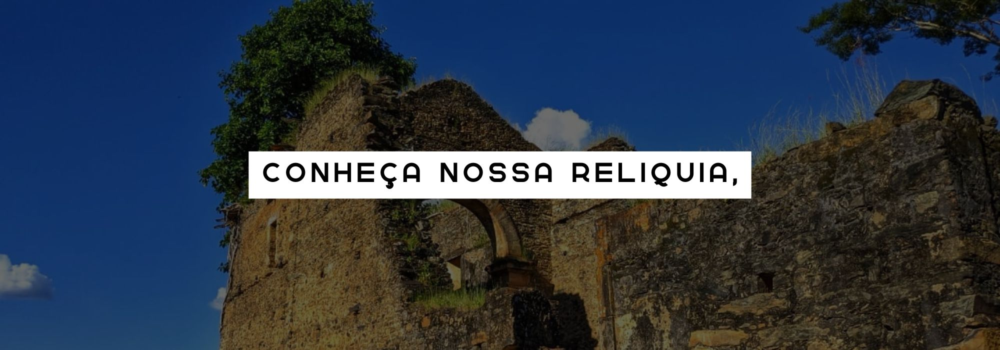
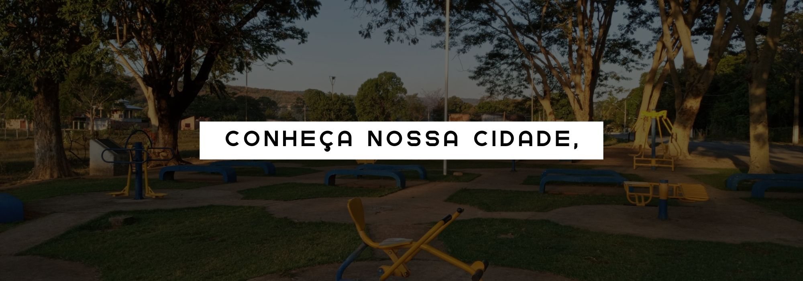
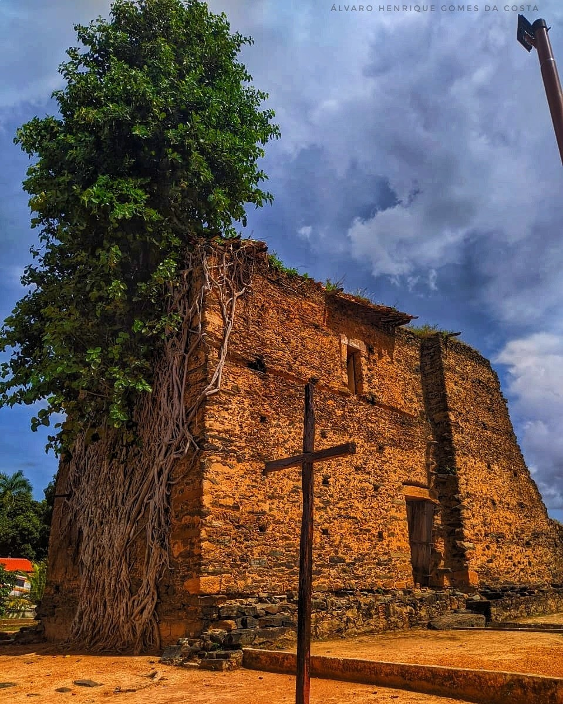
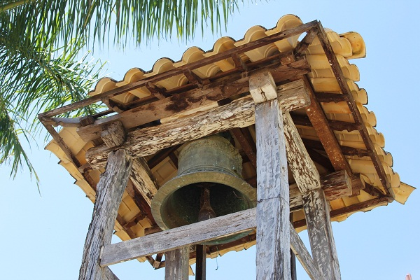
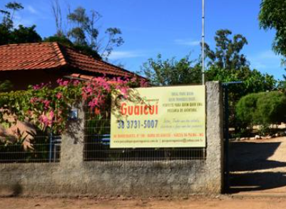
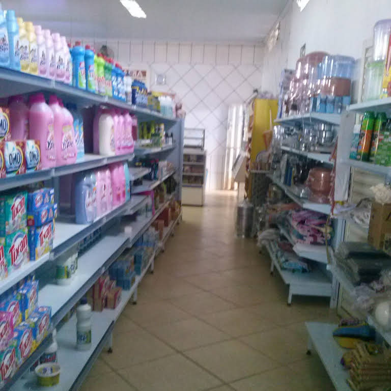

- 
- 
-

TURISMO EM GUAICUI
-

Igreja de Pedras
Principal centro turistico da região, ponto escolhido até por viajantes estranjeiros, o local possui uma beleza inegualavel de ser uma igreja abandonada e possuir uma gemeleira em topo, com raizes que vão até o solo.
Para conhecer mais sobre esse patrimonio historico clique aqui
-
Rio das Velhas
Outro local que atrai muitos turistas é o encontro dos Rios em Guaicui. O encontro entre o Rio das Velhas e o Rio São Francisco é o Principal palco para pesca. Só nesses rios, inueros moradores ganham suas vidas e muitos viajantes se divertem!
Para conhecer mais sobre esse patrimonio historico clique aqui
-

Cultura & religião
Um sino da epoca colonial do Brasil, Imagens sacras do periodo dos jesuitas, danças e festividades rodeiam a historia e a gente guaicuiense. Dentre as festividades temos a tradicional catolica Festa do Divino e a popular Festa do Pescador
Descubra mais sobre o flolcore de Guaicui aqui
Porque vir a Guaicui?
Conhecida na região como terra dos pescadores, Guaicui é um distrito historico cheio de memorias, culturas e tradições. Eventos e conhecimentos que passam de geraçao em geração, permitindo que sua historia não seja engavetada e seja sempre lembrada por suas glorias, ruínas e principalmente, seu povo!
Hospitaleira e riquissima em cultura, Guaicui também é ponto turistico, mantendo o patrimonio tombado pelo IPHAN, a sua famosa Igreja de Pedras, uma construção jusuitas que atrai há seculos, turistas e viajantes enstrangeiros.
Se voce deseja viajar no berço do norte de Minas, venha a Guaicui, conheça nossas origens e comemore conosco a hsitoria nacional!
ONDE FICAR EM GUAICUI
-
Pousada do Getulio
 Endereço: Rua São Miguel, nº 309 | Guaicuí - MG | CEP: 39265000
Endereço: Rua São Miguel, nº 309 | Guaicuí - MG | CEP: 39265000 Instagram: @pousadadogetulio |
Facebook Pousada do Getulio |
Instagram: @pousadadogetulio |
Facebook Pousada do Getulio |  Contato: +55 (38)99928-2322
Contato: +55 (38)99928-2322 -

Pousada Pesqueiro do Guaicuí
Endereço: Rua Independência, nº 330 | Guaicuí - MG | CEP: 39265000 Instagram: - |
Facebook - | Contato: +55 (38) 99823-8177
MERCADOS PRINCIPAIS EM GUAICUI
-
Supermecados Brandão
Endereço: Rua São Pedro, nº 410 | Guaicuí - MG | CEP: 39265000 Instagram: -
Facebook - | Contato: +55 (38)9849-5103 -

Supermecados Paulista
Endereço: Rua São Pedro, nº 108 | Guaicuí - MG | CEP: 39265000 Site: supermercados Paulista |
Facebook - | Contato: +55 (38) 99827-2720